Live Application: https://lemon-backend.azurewebsites.net
Navigate to the application URL. Enter your email address and password, then click Login. New users can register by clicking the Register tab and providing an email, name, and password.
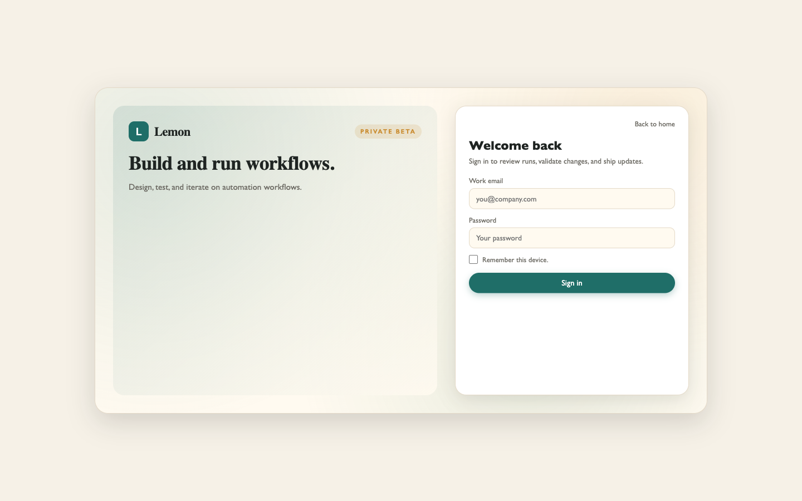
Type a description of your workflow in the chat panel on the left side of the screen. For example: "Create a diabetes treatment workflow that checks HbA1c levels and recommends medication adjustments." The orchestrator will build nodes and connections on the canvas in real time. You can see each tool call as it executes.
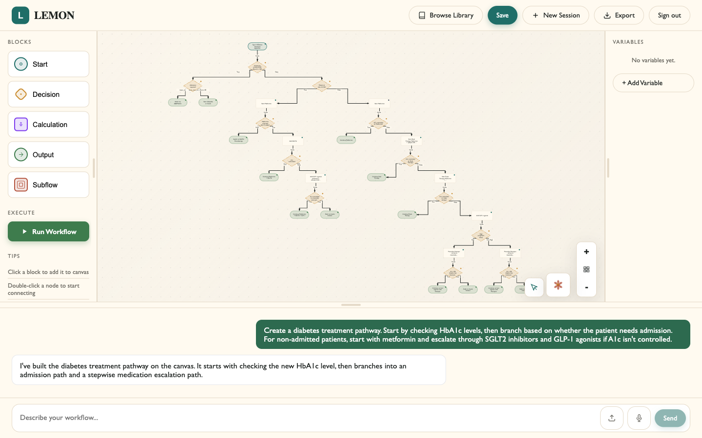
Click the Upload Files button on the home screen, or use the paperclip icon in the chat input. Select an image file (PNG, JPG) or PDF of a flowchart. The system will analyze the image and reconstruct it as an editable workflow on the canvas.
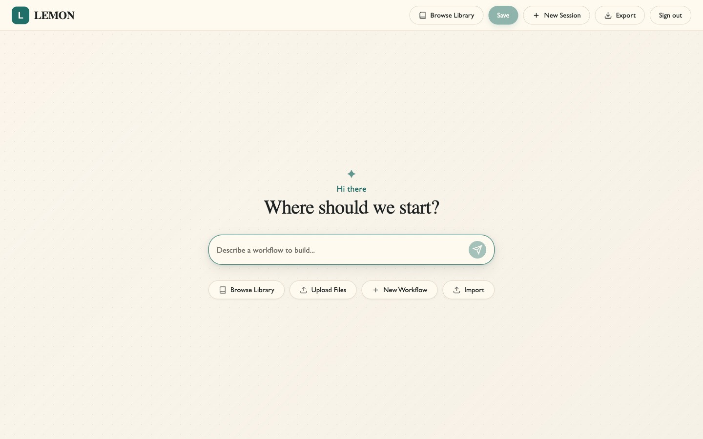
Drag nodes to reposition them. Right-click a node to open its context menu (edit, delete, connect). Draw connections by clicking the output port of one node and dragging to the input of another. Use scroll wheel to zoom and click-drag on empty space to pan.
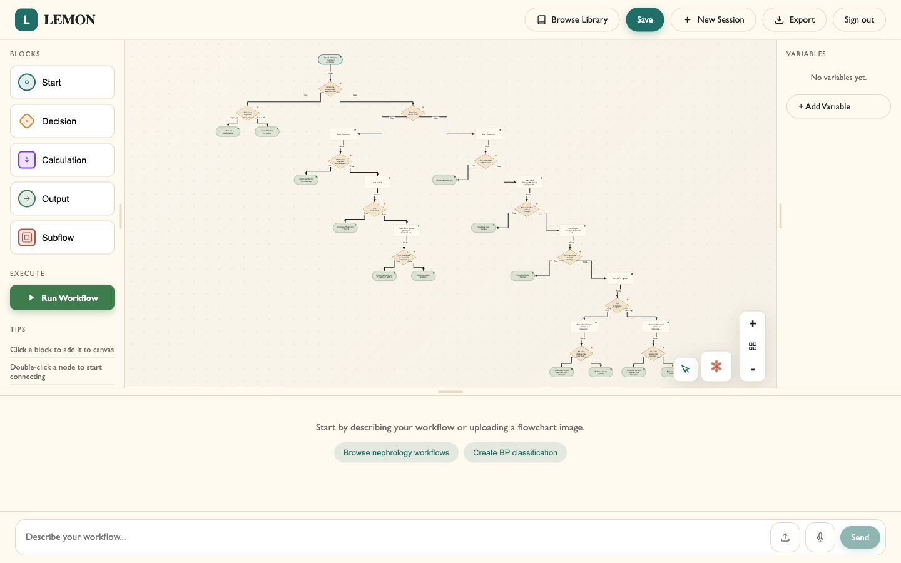
Open the right sidebar to view workflow variables. Each variable has a name, type (string, number, boolean, date, enum), and optional description. Variables are used in decision conditions and calculation nodes. The orchestrator creates variables automatically, but you can also add or edit them manually.
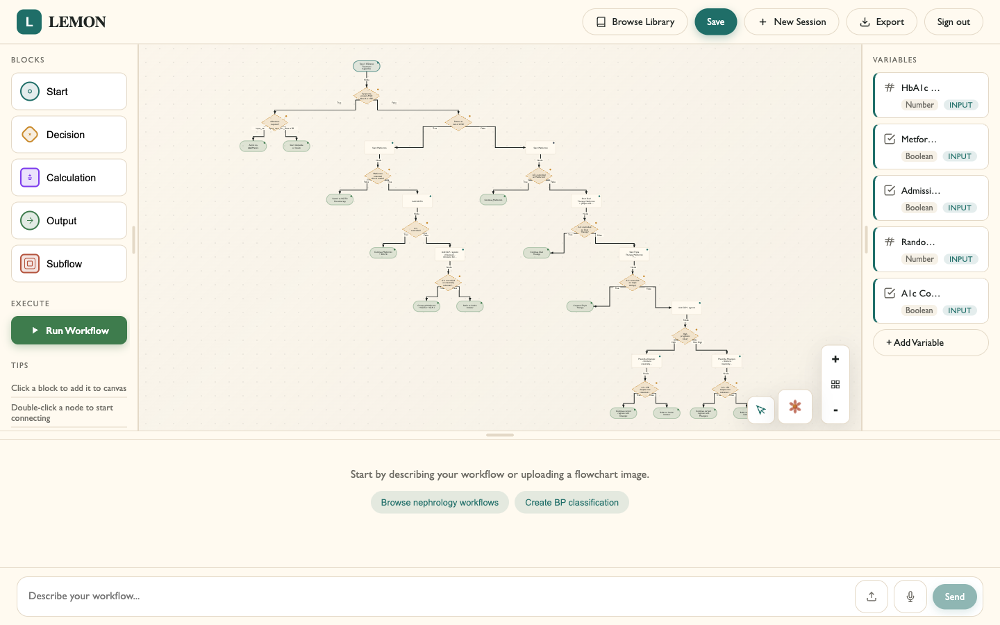
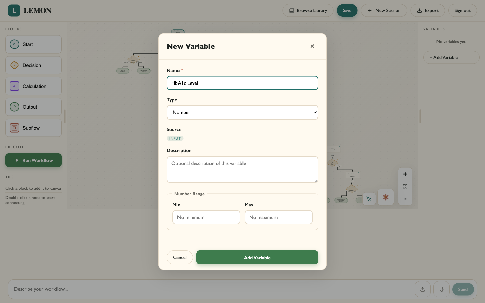
Create a subprocess node to reference another saved workflow. Configure the input mapping to connect parent variables to the child workflow's inputs. When executed, the subprocess runs the referenced workflow and returns its output as a derived variable.
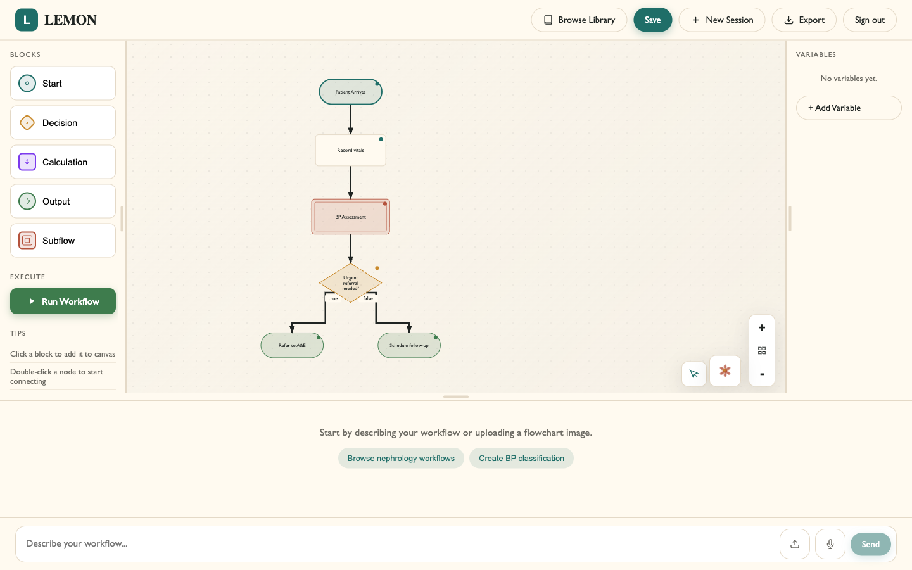
Click the Run Workflow button in the left sidebar. Enter values for each input variable in the dialog that appears. Click Run to start execution. The system steps through each node, highlighting the active node and the execution path on the canvas. The final output and execution context are displayed when complete.
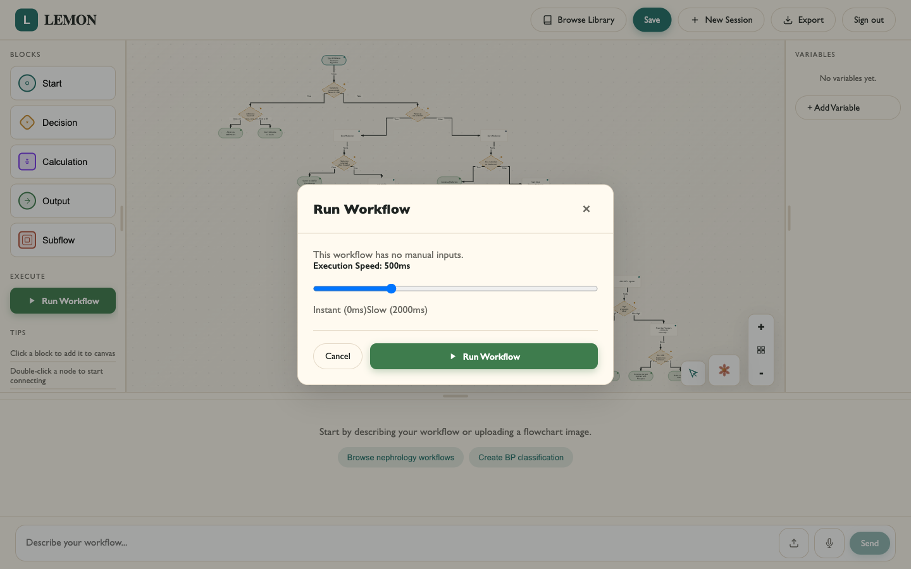
Click Save in the header to store your workflow in the personal library. You can access saved workflows later from the Library page. Each workflow stores its full state including nodes, edges, variables, and conversation history.
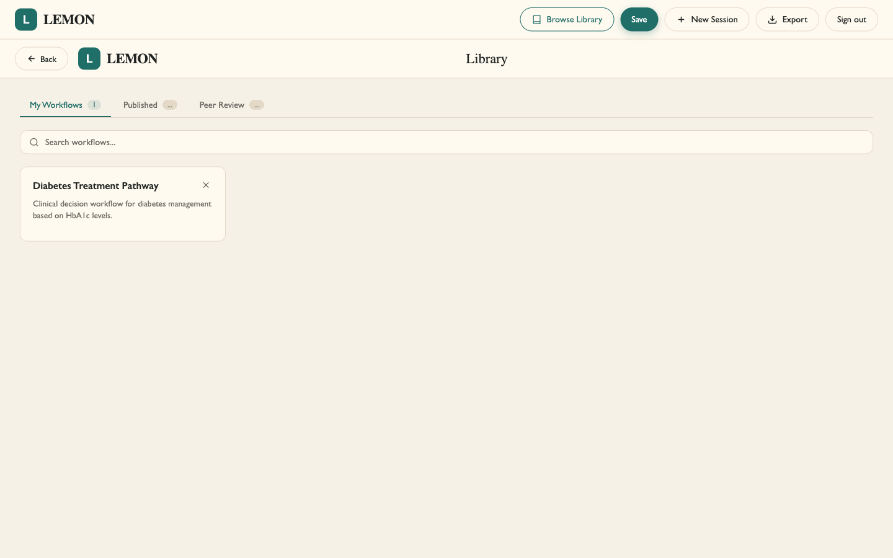
When saving a workflow, check the "Publish to Community Library" checkbox in the save dialog. This makes your workflow visible to other users in the Peer Review tab. Published workflows start as "unreviewed" and can be promoted to "reviewed" status through community voting.
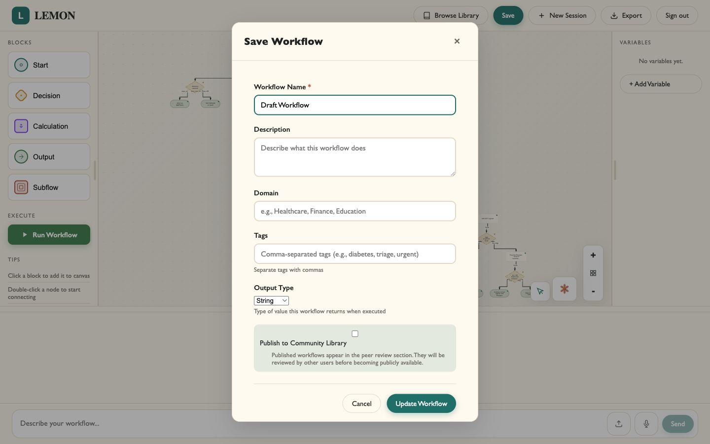
In the Library page, switch to the Peer Review tab to browse all published workflows. Use the upvote and downvote buttons on each workflow card to vote on quality. The Published tab shows only workflows that have reached the vote threshold. Clicking on a published workflow lets you view its full structure.
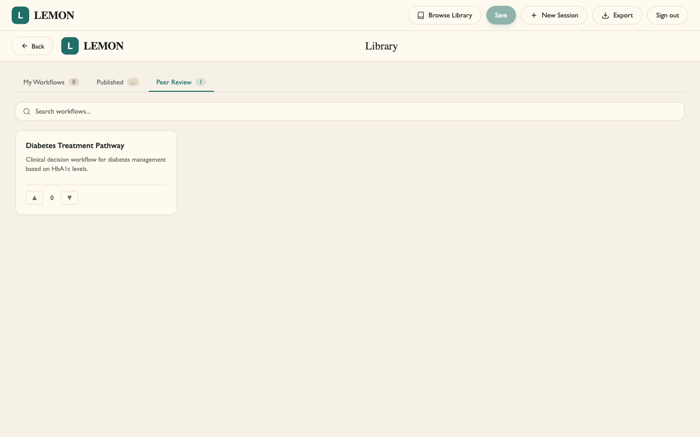
Navigate to the Export page. Choose your export format:
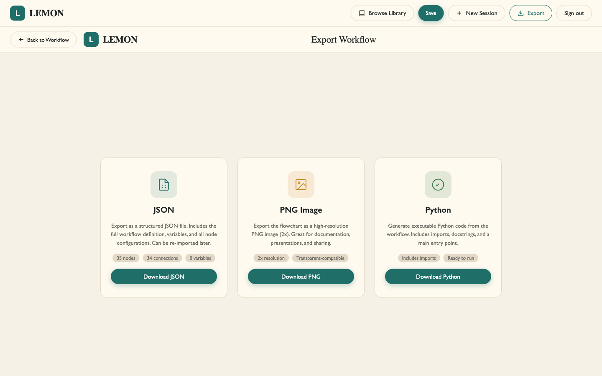
curl -LsSf https://astral.sh/uv/install.sh | shClone the repository:
git clone https://github.com/jrh-mann/LEMON.git
cd LEMONInstall Python dependencies:
uv syncInstall frontend dependencies:
cd src/frontend
npm install
cd ../..Configure environment variables:
cp .env.example .envThen edit .env and add your Anthropic API key:
ANTHROPIC_API_KEY=sk-ant-...
ANTHROPIC_MODEL=claude-opus-4-6Start the development servers:
./scripts/dev.shAccess the application:
The project uses GitHub Actions for production deployment. The workflow file is at .github/workflows/deploy-prod.yml.
Deployment process:
prod branchnpm ci && npm run build)To configure deployment for a new environment:
AZURE_WEBAPP_PUBLISH_PROFILEprod branch to trigger deploymentLEMON is released under the MIT License. This permits use, modification, and distribution of the source code for any purpose, provided the original copyright notice and license text are included. The full license text is available in the LICENSE file in the repository root.
LEMON stores workflow definitions, user accounts (email and hashed password), and conversation logs for audit purposes.
No patient data or personally identifiable health information is processed or stored by the system. The requirements specification explicitly excludes patient datasets and production data processing from the system scope.
Workflow descriptions and chat messages are sent to the Anthropic Claude API for processing. Anthropic's data handling and privacy policies apply to this transmitted data. Users should be informed that their input is processed by a third-party AI service.
User authentication uses PBKDF2 password hashing with random salts. Passwords are never stored in plaintext.
Users can delete their workflows at any time. Session tokens expire automatically.
The system enforces user ownership on all API endpoints, ensuring users can only access their own data.
The development blog documents the team's progress throughout the project with bi-weekly entries covering research, technical decisions, and implementation milestones.
Read the full development blog here.